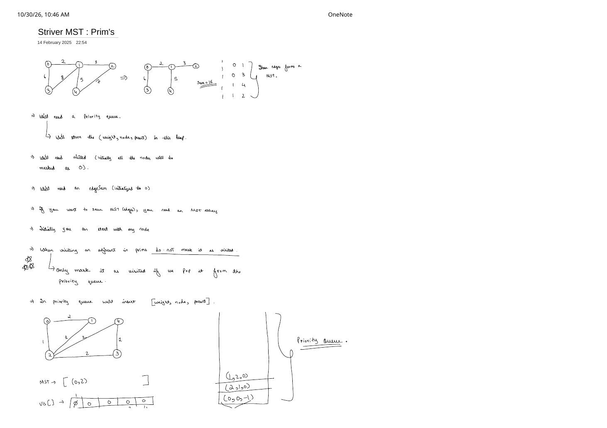
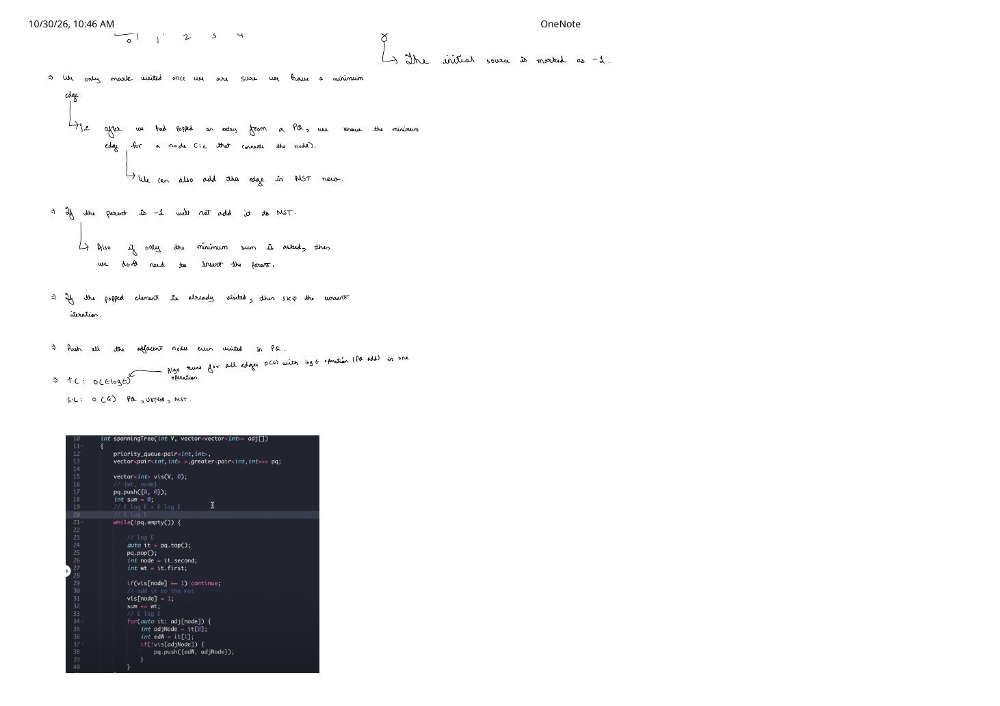
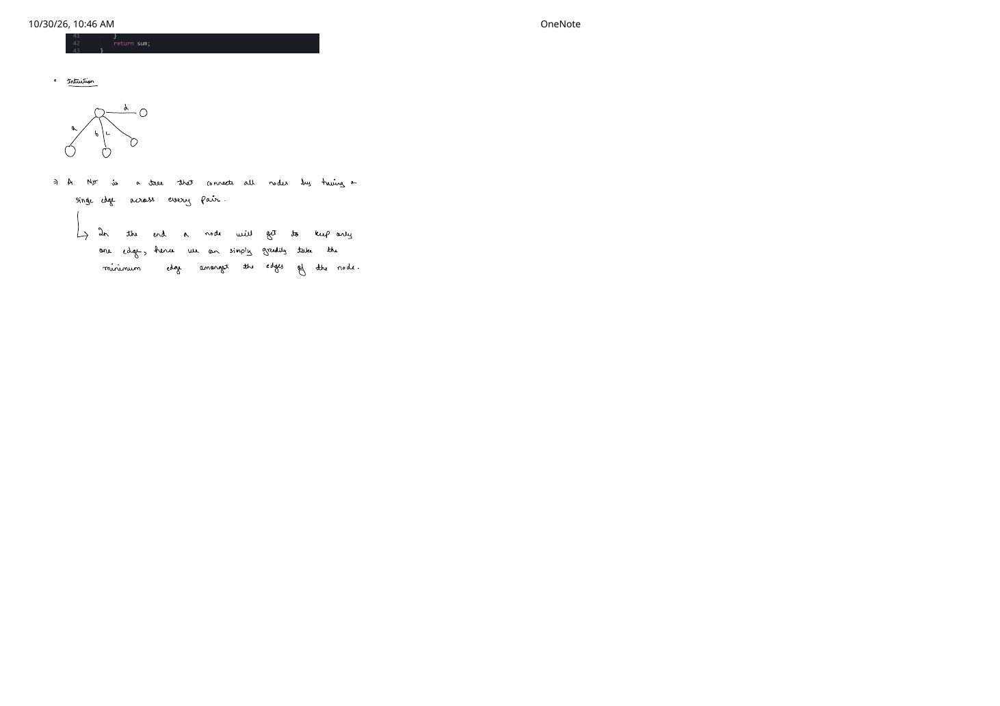

Prim's MST Algorithm (Striver): The Visited-on-Pop Invariant, Min-Heap Trace & $\mathcal{O}(E \log E)$ Code
Expanded from handwritten competitive coding study note: 03_Striver_MST_Prim_s.pdf (Pages 1–3) · View original handwritten pages
1. Problem Statement & Greedy Cut Intuition (Pages 1 & 3)
Given a connected, undirected, weighted graph on $V$ vertices, Prim's Algorithm computes both the minimum total MST weight (edgeSum) and, when requested, the exact $V - 1$ tree edges (MST = [(u, v), ...]). For instance, at the top of Page 1, the 5-node graph is reduced to edges [(0, 1), (0, 3), (1, 4), (1, 2)] with Sum = 16.
Handwritten Greedy Intuition (Page 3) Formalized via the Cut Property
Page 3 sketches a node with candidate incident edges $a, b, c, d$ and observes: "An MST is a tree that connects all nodes by having a single unique path/edge connecting each new node into the tree—in the end, each newly attached node keeps only one incoming bridge edge, so we can greedily pick the minimum-weight edge crossing from our visited tree $S$ to $V \setminus S$." By the Cut Property, the lightest edge crossing cut $(S, V \setminus S)$ at every step is guaranteed safe to lock into the MST!
2. Data Structures & The Three-Starred (***) Visited-on-Pop Rule
Pages 1 and 2 lay out every state variable and edge-case rule needed for a bug-free Prim's implementation:
- Min-Heap Priority Queue (
pq): Stores tuples(weight, node, parent)ordered by minimumweightfirst. (Page 2 shortcut: if the problem only asks for the minimum weight sum and NOT the MST edge list, omitparentand push pairs(weight, node)!) vis[V]Array: Initialized to all0s; tracks vertices already locked into our growing tree $S$.edgeSum = 0&MST = []: Accumulates total cost and tree edges.- Arbitrary Starting Seed: Start from any vertex (say
0) by pushing(0, 0, -1). On Page 2: whenparent == -1, we add weight0(no-op) and do not append a dummy edge toMST.
Three-Starred Rule on Page 1 (***): NEVER Mark vis[adjNode] = 1 When Pushing!
"When visiting an adjacent in Prim's, do NOT mark it as visited. Only mark it as visited when we pop it from the priority queue!"
Why? Pushing (edW, adjNode, node) only proposes one candidate bridge to adjNode. Before adjNode pops, another newly locked vertex may discover a strictly cheaper edge to adjNode and push it to the top of the min-heap! Only when adjNode is popped for the first time are we 100% sure we hold the minimum-weight edge connecting adjNode to $S$. Any heavier duplicate tuples for adjNode that pop later see vis[node] == 1 and simply continue.
3. Step-by-Step Priority Queue Dry Run (Bottom of Page 1)
Let us trace the exact 5-node benchmark graph drawn at the bottom of Page 1 (0-1:2, 0-2:1, 1-2:1, 2-4:2, 2-3:2, 3-4:1), where both nodes 1 and 4 enter the heap with heavier edges first before cheaper edges overtake them:
[(0,2), (2,1), (2,3), (3,4)] give minimum sum $1 + 1 + 2 + 1 = 5$ (marking on push would have yielded $1 + 2 + 2 + 2 = 7$!).| Popped Tuple | Action | vis[0..4] |
Min-Heap Contents (Sorted) | MST & edgeSum |
|---|---|---|---|---|
| Init | Seed source 0 | [0,0,0,0,0] | [(0,0,-1)] | [], 0 |
(0, 0, -1) | Lock 0; push 1, 2 | [1,0,0,0,0] | [(1,2,0), (2,1,0)] | [], 0 |
(1, 2, 0) | Lock 2; push 1, 3, 4 | [1,0,1,0,0] | [(1,1,2), (2,1,0), (2,3,2), (2,4,2)] | [(0,2)], 1 |
(1, 1, 2) | Lock 1 (0,2 visited) | [1,1,1,0,0] | [(2,1,0), (2,3,2), (2,4,2)] | [(0,2),(2,1)], 2 |
(2, 1, 0) | vis[1]==1 → skip | [1,1,1,0,0] | [(2,3,2), (2,4,2)] | [(0,2),(2,1)], 2 |
(2, 3, 2) | Lock 3; push (1,4,3) | [1,1,1,1,0] | [(1,4,3), (2,4,2)] | [...,(2,3)], 4 |
(1, 4, 3) | Lock 4 | [1,1,1,1,1] | [(2,4,2)] | [...,(3,4)], 5 |
(2, 4, 2) | vis[4]==1 → skip | [1,1,1,1,1] | [] | Done! Sum = 5 |
4. Progression: $\mathcal{O}(V^2)$ Array Prim's vs. $\mathcal{O}(E \log E)$ Min-Heap Prim's
- Dense-Graph Array Prim's ($\mathcal{O}(V^2)$ time, $\mathcal{O}(V)$ space): Maintain
minEdge[v]across $V$ iterations, linearly scanning $0 \dots V-1$ for the minimum unvisited vertex in $\mathcal{O}(V)$. On complete geometric graphs where $E = \binom{V}{2} \approx V^2$ (e.g., LC 1584 Min Cost to Connect All Points), $\mathcal{O}(V^2)$ beats $\mathcal{O}(V^2 \log V)$ and avoids allocating $\Theta(V^2)$ heap entries! - Standard Sparse/General Min-Heap Prim's ($\mathcal{O}(E \log E)$ time, Page 2 C++ code): Uses
std::priority_queuewithgreater<>so only active crossing edges are touched.
// Striver's Min-Heap Prim's MST Algorithm (from Page 2 screenshot) — C++
class Solution {
public:
int spanningTree(int V, vector<vector<int>> adj[]) {
using P = pair<int, int>; // {weight, node}
priority_queue<P, vector<P>, greater<P>> pq;
vector<int> vis(V, 0);
pq.push({0, 0});
int sum = 0;
// Up to 2E pushes + 2E pops -> O(E log E)
while (!pq.empty()) {
auto [wt, node] = pq.top(); // O(log E) pop
pq.pop();
if (vis[node] == 1) continue; // Skip stale heavier candidates!
// Add node to MST ONLY upon popping from min-heap
vis[node] = 1;
sum += wt;
for (const auto& it : adj[node]) {
int adjNode = it[0];
int edW = it[1];
if (!vis[adjNode]) {
pq.push({edW, adjNode}); // O(log E) push; do NOT mark vis[adjNode]!
}
}
}
return sum;
}
};5. Complexity Proof & Key Edge Cases
Page 2 Time & Space Derivation
- Time Complexity: $\mathcal{O}(E \log E)$ (which equals $\mathcal{O}(E \log V)$ on simple graphs because $E \le V^2 \implies \log E \le 2 \log V$). Even though a
forloop sits inside awhileloop, theif (vis[node] == 1) continue;guard guarantees the adjacency list of each vertex $u$ is scanned at most once! Summing $\deg(u)$ over all $u$ gives $2E$ total pushes and at most $2E + 1$ pops, each costing $\mathcal{O}(\log E)$: $\mathcal{O}(E \log E + E \log E) = \mathcal{O}(E \log E)$. - Space Complexity: $\mathcal{O}(E + V)$ — up to $\mathcal{O}(E)$ candidate tuples in
pqplus $\mathcal{O}(V)$ forvis[]andMST.
- Disconnected Graph Detection: A single Prim's run from node
0only spans0's connected component! Trackint locked = 0;each timevis[node] = 1executes; iflocked < Vwhenpqempties, no spanning tree exists (or wrap Prim's infor (int s = 0; s < V; ++s) if (!vis[s]) ...for a Minimum Spanning Forest). - Early Exit (
locked == V/mstEdges.size() == V - 1): Once all $V$ vertices are locked ($V - 1$ non-root edges added), every remaining tuple inpqis guaranteed stale—breaking early skips unnecessary final pops! - Large Edge Weights: Accumulate
long long sum = 0;in C++ whenever $V \cdot \max(w) > 2 \times 10^9$.
From the Handwritten Notes
View original handwritten page — Striver MST Prim's: Setup, Visited-on-Pop Rule (***) & PQ Trace (Page 1)


03_Striver_MST_Prim_s.pdf: Sum = 16 MST example, (weight, node, parent) priority queue setup, the three-starred visited-on-pop rule, and initial PQ state on the second 5-node graph.View original handwritten page — parent == -1 Rule, $\mathcal{O}(E \log E)$ Derivation & C++ Code (Page 2)


03_Striver_MST_Prim_s.pdf: why parent == -1 skips adding the starting root to MST, omitting parent for sum-only queries, $\mathcal{O}(E \log E)$ complexity, and Striver's C++ spanningTree code.View original handwritten page — Greedy Minimum-Crossing-Edge Intuition (Page 3)


03_Striver_MST_Prim_s.pdf: concluding code lines and greedy intuition explaining why keeping the minimum crossing edge into each vertex forms an MST.